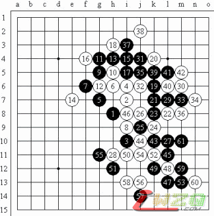
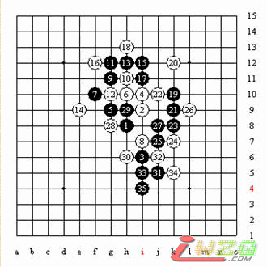
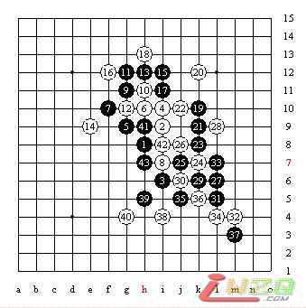
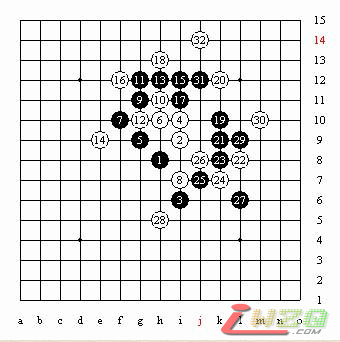

4月14、15两天我 有幸带队去上海参加了第一届京沪擂台赛，第一阶段的赛事。这个赛事能够成功举办非常的难得。因为我作为棋手的时候没有参加过很遗憾，但是能带领自己的学生来上海参加很荣幸！
14日下午1点第一届京沪擂台赛在上海徐汇区光大会展中心大酒店运动休闲天地揭幕。
第一轮由北京队先锋姚金蕊四段----上海先锋顾婉卿三段。

黑-姚金蕊四段----白顾婉卿三段 （交换）
13；30裁判长黄民城宣布比赛开始，双方选手先进行猜先。最终，姚金蕊执白，顾婉卿执黑进行猜先。姚金蕊猜到黑棋布局。小姚选择了“岚月”开局，再来的火车上我们也针对第一轮比赛作了认真的准备，主要是复习了一些平衡开局，强开局大概研究了下，实战顾婉卿选择了交换。这也是在意料之中的，因为岚月开局是对黑非常有利的开局。小姚白4立二。这个变化里面隐含了很多攻击和防御的变化。小顾两打非常正确。A点是必胜。双方前面黑15。白16都是无可争议的老的定式变化。在这里可以有权利选择变化的是黑棋。就是黑17的变化，是继续下老的变化，还是创新。以前老的定式变化17下在ｊ５，黑优势。而新的下法是在I５，是黑棋必胜。这个变化在去年的世界E-MAIL比赛和世界杯团体赛种出现过，现在的变化非常的快，只要出现就会被高手们深入全面的研究出来。得出结论。
实战中小顾没有选择老的变化。而是采用新的变化。黑17手-I5。我记得这个变化因该是上海的许斌最早研究出来，是黑必胜的下法。当然其中还有许多白棋的强防手段，实战的白18最强、这里18-K4是否可以？黑19挡住白棋一个冲，扩大了黑棋的优势。小姚经过长考白20-K4。唯一防。其他的各点防守方法都将导致黑棋比较简单的取胜。黑21-K7开始攻击，白22-L8最强防。22如果挡在中间，黑棋23直接进攻就简单杀了。（变化图1）

如26先冲见（变化图2）

黑23小顾继续展开猛烈的攻击，不给对方喘息之机。黑的进攻很联贯，白24的防守也是唯一的。小姚在比赛中的长处就是防守精确。白棋在苦苦防守。黑25到白30下的都很正常没有任何的破绽。
现在对比赛中的双方棋手来说都很关键。一方在仔细的考虑黑如何利用连接把黑棋上下的优势联系起来。而一方则在用对方的长考来分析局面，争取算出最强防守。
黑31做棋妙手。把上下的棋连接了起来。按照在场高手们的理解应该是黑胜差不多了。白32没有办法只有防守在里面。黑33.35.37.39.41.43连续的进攻。，顾婉卿的战略基本成功。把所有的上面变化交换完。拿到先手继续到下面进攻，而且还有了个活二今后可以利用上。白44唯一防。小顾的黑45还在继续进行攻击，黑下面的优势非常的大。白46唯一，黑47、49继续攻击。相信到这里大家也都看出来，基本是把优势保持下来，小姚的白48-56通过先手冲四来防。白56也是没有办法。只有这里。如50不冲四直接防，那黑51-K11简单胜。
这个时候小顾黑57一跳。黑59一冲.61跳活三，后面简单VCF。这盘棋下到这里对局结束了，全盘黑棋都在进攻。比较精彩！
第一天的比赛上海队先锋获胜。
下来的时候复盘小姚说这个岚月黑大优的变化，是在来之前的晚上在QQ五子棋里面，蓝鲸等高手给准备的，其实这个变化早就研究出来是黑胜。不如按照事先赛前安排用瑞星开局那么稳妥了。
下面给五子棋爱好者留个问题。（变化图3）
白32之后，黑33如何胜？

明天早上9：00，北京队次峰胡瑜四段将挑战上海队先锋顾婉卿三段！！